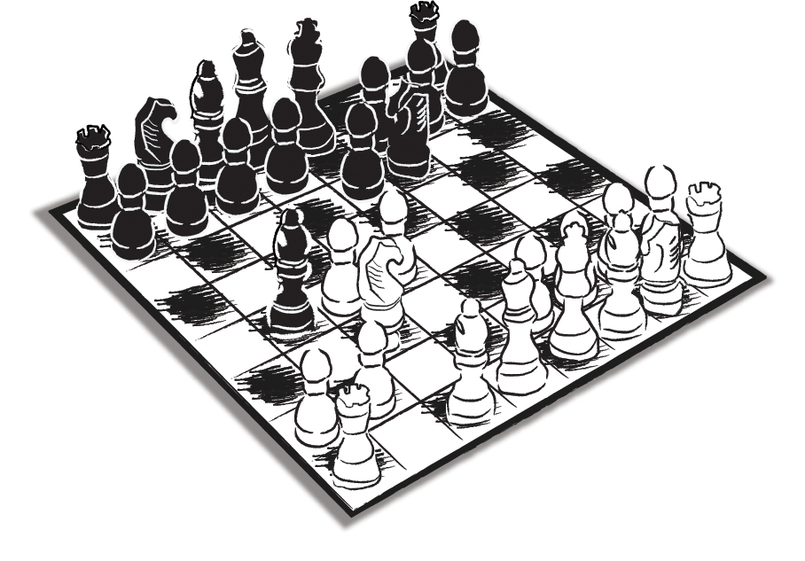

Ne zaman ki kendimi salmışım, ne zaman ki içimden geldiği gibi davranmışım, işleri berbat etmek, kaçınılmaz biçimde kaderin bir cilvesi olarak karşıma çıkmıştır...
Adını kendime saklamak istediğim deneyimli bir gazeteci arkadaşımızla 1978’de tanışmıştık. Avrupa’daki merkezlerden birinde gazetesinin temsilcilik görevini yürütüyordu. Ben o sıralarda Milliyet binasında Hey dergisinde çalışıyor, Milliyet’in magazin sayfasına da servis yapıyordum. Ünlü gazetecimiz de bir süre, kendi gazetesinin üst yönetiminde görev almıştı. Bu durum başlangıçta resmen ne okura açıklanmıştı ne de gazetenin diğer sosyal paydaşlarına. Arkadaşımız duruma bir bakacak, eğer işi kıvıracağına kanaat getirirse yoluna devam edecek, aksi takdirde Avrupa’daki merkezlerden birinde başarıyla sürdürdüğü temsilcilik görevine geri dönecekti. Nitekim böyle de oldu. Kısa bir denemeden sonra hedeflediği genel yayın yönetmenliğinin gayya kuyusunda kaybolacağını anladı, yöneticilik kariyerini başlamadan noktaladı.
Ben ise Hey’den Yorum Ajans’a geçmiş, sonra da Milliyet’in Almanya sorumlusu olarak tekrar gazeteye dönmüştüm. Yorum Ajans’ta yayınladığımız dergileri Ali Karacan satın almıştı ve Karacan Yayınları’nı yeniden yapılandırmak için hummalı bir çalışmaya girişmişti. Bana da Karacan Yayınları’nın Genel Yayın Yönetmenliği’ni teklif etmişti. Ercüment Karacan’la da uzunca bir görüşme yapmıştık. Gazete ile yayınevi arasında bir tercih yapmak durumundaydım...
Karacan’ların teklifini kabul edip Karacan Yayınları’na geçtim. Yukarıda sözünü ettiğim gazeteci arkadaşımız Karacan Yayınları’na zaman zaman uğrardı. Bunları niye anlattım? Bundan sonra okuyacağınız patavatsızlık örneği daha iyi anlaşılsın diye...
Onca yıldır tanıdığım ünlü gazetecimizle o günlerde üzerinde çalıştığı bir kitap için sık sık bir araya geliyorduk. Bir gün yine randevulaştık. Yazı işleri salonunda çocuklarla konuşuyorum. O sırada arkadaşımız merdivenlerden çıkmış, bana doğru geliyor. Baktım bir ayağı aksıyor. Hemen atladım:
- Geçmiş olsun! Hayırdır, ciddi bir şey mi?
- Bilmiyor musun, bu bende çocukluktan beri var.
- ... - Üzülme... Olur böyle şeyler...
İçimden kendime, “Oha! Çüş!” diye bağırdığımı hatırlıyorum. Ama ne işe yarar; bir kere çamı devirmiştim!... Hem de herkesin gözünün önünde.
“İnsanın ağzı ile kulağının arasında on santim var,” derdi rahmetli annem, “Aradaki bağlantıyı koparmamak lazım...” Anlaşılmadığını hissettiği ortamlarda, ‘olayı’ biraz daha açardı: “Ağzınızdan çıkanı kulağınız duysun!” Nerede bizde o yetenek! 63’ümü bitirip 64’ümden gün almaya başladığım şu günlerde artık bir hayli azalmış olsa bile, beni tanıyanlar kritik görüşmelerde hâlâ ateş üzerinde oturur gibi hissederler kendilerini; çünkü her an bir çam devirebilir ve müşteriyi huzursuz edebilirim...
Bunun nedeni, çok sık sorguladığımız ve çok iyi bildiğimizi sandığımız bir şeyi ‘refleks’ haline getirmeyişimizdi.
Aslında kimin kimi yönetmesi gerektiği sorusunu her ortamda kendimize hatırlatmakta yarar vardır. En azından hata oranını azaltmak, nispeten rahat etmek için.
Öte yandan bu sorunun yanıtını doğru veremediğiniz hallerde sürekli risk altındasınız demektir. Çünkü, eş ve özel müşteriyle ilişkide başları ayak, ayakları baş haline getirdiniz mi, hedefinize ulaşmanız mümkün değildir.